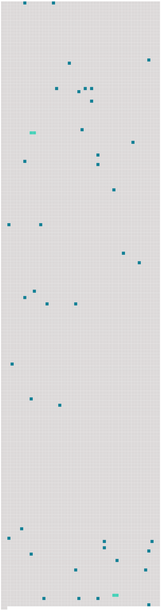

Longueur nb maillons : 42 mentions |
 |
Il espérait qu’ après ses services, [on] ferait des difficultés pour l’ accepter, qu’ [on] le supplierait de rester : il n’ en fut rien, et comme il était trop fier pour revenir sur son offre, il partit, navré, accusant l’ ingratitude des hommes. [34 phrases] Cela ne lui nuisit pas d’ abord ; il semblait que ces excentricités mêmes fussent la preuve du génie qu’ [on] lui prêtait ; car il est entendu, parmi les gens de bon sens, qu’ un artiste n’ en saurait avoir. Mais [on] ne tarda pas à être fixé sur le caractère des ces extravagances : la source ordinaire en était la bouteille. [12 phrases] Il n’ était pas un mauvais homme, mais un homme demi-bon, ce qui est peut-être pire, faible, sans aucun ressort, sans force morale, au reste se croyant bon père, bon fils, bon époux, bon homme, et peut-être l’ étant, si pour l’ être il suffit d’ une bonté facile, qui s’ attendrit aisément, et de cette affection animale, qui fait qu’ [on] aime les siens, comme une partie de [soi] [On] ne pouvait même pas dire qu’ il fût très égoïste : il n’ avait pas assez de personnalité pour l’ être. [2 phrases]
Comme un poids inerte qu’ [on] abandonne en l’ air, ils tendent à tomber, il faut absolument qu’ ils tombent ; et ils entraînent dans leur chute tout ce qui est avec eux. [8 phrases] Mais il était fier qu’ [on] le traitât en homme, et il s’ acquittait de sa tâche gravement. [14 phrases] Le petit Christophe n’ avait encore aucune idée des difficultés de la vie ; il ne connaissait d’ autres limites à sa volonté que celle de ses parents, qui n’ était pas bien gênante, puisqu’ [on] le laissait pousser à peu près au hasard ; il n’ aspirait qu’ à devenir grand, pour pouvoir faire tout ce qu’ il voulait. Il n’ imaginait pas les contraintes où [l’ on] se heurte à chaque pas ; et surtout il n’ eût jamais pensé que ses parents ne fussent pas entièrement maîtres d’ eux -mêmes. [5 phrases]
Christophe balbutia en rougissant qu’ il venait voir « madame Krafft », – ainsi qu’ [on] le lui avait recommandé de dire. [12 phrases] Elle commença par ajouter à son trouble, en voulant qu’ il levât le menton, pour qu’ [on] vît sa figure, et qu’ il allât tendre la main à chacune des personnes qui étaient là, en leur disant bonjour. [1 phrases] Mais peu à peu il s’ enhardit, et il risqua hors de sa cachette un petit œil brillant et rieur, qui disparaissait de nouveau, toutes les fois qu’ [on] le regardait. [2 phrases]
Le cœur de l’ enfant se gonflait d’ orgueil, en voyant combien [on] appréciait sa mère, et quel rôle elle jouait dans cette belle pièce, ornée d’ objets magnifiques d’ or et de cuivre qui brillaient. [18 phrases]
Christophe jeta un regard désespéré sur sa mère ; mais elle souriait à la maîtresse d’ un air si empressé qu’ il vit qu’ il n’ y avait rien à espérer, et il suivit son guide, comme un mouton qu’ [on] mène à la boucherie. [29 phrases] [On] fit une barrière avec de petits bancs, et [on] mit Christophe en demeure de la franchir. [24 phrases] [On] entendit les portes battre, et des exclamations de colère. [11 phrases] Pour achever de l’ accabler, Louisa, qu’ [on] avait appelée, parut ; et, au lieu de le défendre, elle commença par le claquer, elle aussi, avant de rien savoir, et voulut qu’ il demandât pardon. [22 phrases] L’ enfant se mit à pleurer, et Melchior à crier, de plus en plus fort l’ un et l’ autre, jusqu’ à ce qu’ [on] entendît le pas précipité de Louisa, qui montait l’ escalier. [5 phrases] Tout en rossant son fils, Melchior disait que le petit avait raison, que voilà à quoi [on] s’ exposait en allant servir chez des gens, qui se croient tout permis, parce qu’ ils ont de l’ argent. [2 phrases]
À la fin, [on] le poussa dans un recoin obscur, où [on] l’ enferma sans souper. [48 phrases] [On] faisait maigre chère, ces jours -là. [31 phrases] Son robuste estomac était à la torture ; parfois il en tremblait, la tête lui faisait mal ; il avait un trou dans la poitrine, un trou qui tournait et qui s’ élargissait comme une vrille qu’ [on] enfonce. [4 phrases] À quoi sert de se plaindre, quand [on] ne peut faire autrement?? [89 phrases] À quelque temps de là, à l’ école, où Christophe passait son temps à regarder les mouches au plafond et à donner des coups de poing à ses voisins, pour les faire tomber du banc, le maître qui l’ avait pris en grippe, parce qu’ il remuait toujours, parce qu’ [on] l’ entendait toujours rire, et parce qu’ il n’ apprenait jamais rien, fit une allusion inconvenante, un jour que Christophe s’ était lui -même laissé choir, à certain personnage bien connu dont il semblait vouloir suivre brillamment les traces. [4 phrases] [On] ne fit pas attention à ses paroles. [3 phrases] Melchior le roua de coups : il hurla ; mais à toutes les sommations qu’ [on] lui faisait après chaque correction, il répondait rageusement : « Non!! » [On] lui demanda au moins de dire pourquoi ; il serra les dents et ne voulut rien dire. [2 phrases] [On] l’ enferma au cabinet noir. [4 phrases] [On] n’ était pas douillet dans la famille : malade ou non, [on] ne se plaignait jamais, et rien n’ était capable de changer quelque chose aux habitudes des deux Krafft, père et fils. [1 phrases] Christophe n’ était pas loin de partager leur dédain pour sa mère : il ne comprenait pas qu’ [on] fût malade ; quand il tombait, ou se frappait, ou se coupait, ou se brûlait, il ne pleurait pas ; mais il était irrité contre l’ objet ennemi. [3 phrases]
Il trouvait cela naturel, étant prêt à faire aux autres ce qu’ [on] lui faisait à lui -même. Cependant, il avait peur d’ une infinité de choses ; et, bien qu’ [on] n’ en sût rien, – car il était très orgueilleux, – rien ne le fit tant souffrir que ces terreurs continuelles, durant une partie de son enfance. [13 phrases] Pendant quelques instants, le chemin faisait un coude, où [l’ on] ne voyait rien. [1 phrases] Lorsqu’ [on] sortait des buissons qui entouraient la route, et qu’ [on] grimpait sur le talus, [on] distinguait encore une lueur jaunâtre au bord de l’ horizon ; mais cette lueur n’ éclairait pas, et elle était plus oppressante que la nuit ; elle faisait l’ obscurité plus sombre autour d’ elle : c’ était une lumière de glas. [5 phrases] Il y avait des nains assis dans les fossés, des lumières dans l’ herbe, des vols effrayants dans l’ air, des cris stridents d’ insectes, qui sortaient [on] ne sait d’ où. |
 |
La ressource peut être téléchargée sur la page Ortolang
Si vous avez des questions ou vous voyez des erreurs, merci d'envoyer un mail à silvia.federzoni89@gmail.com
Site développé par S. Federzoni (contact)